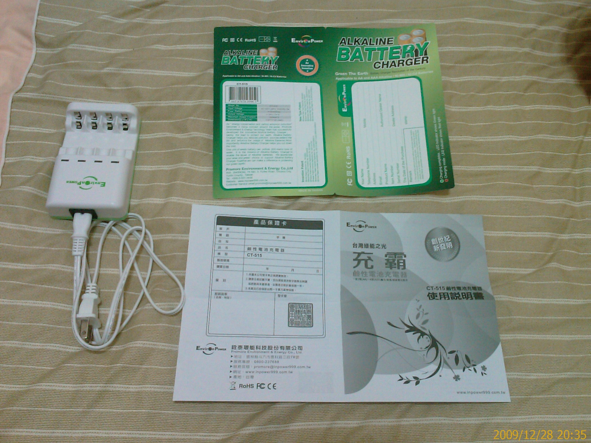
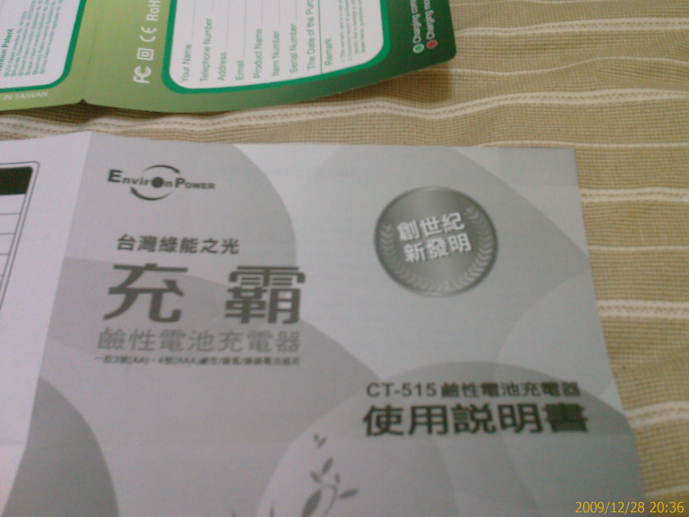
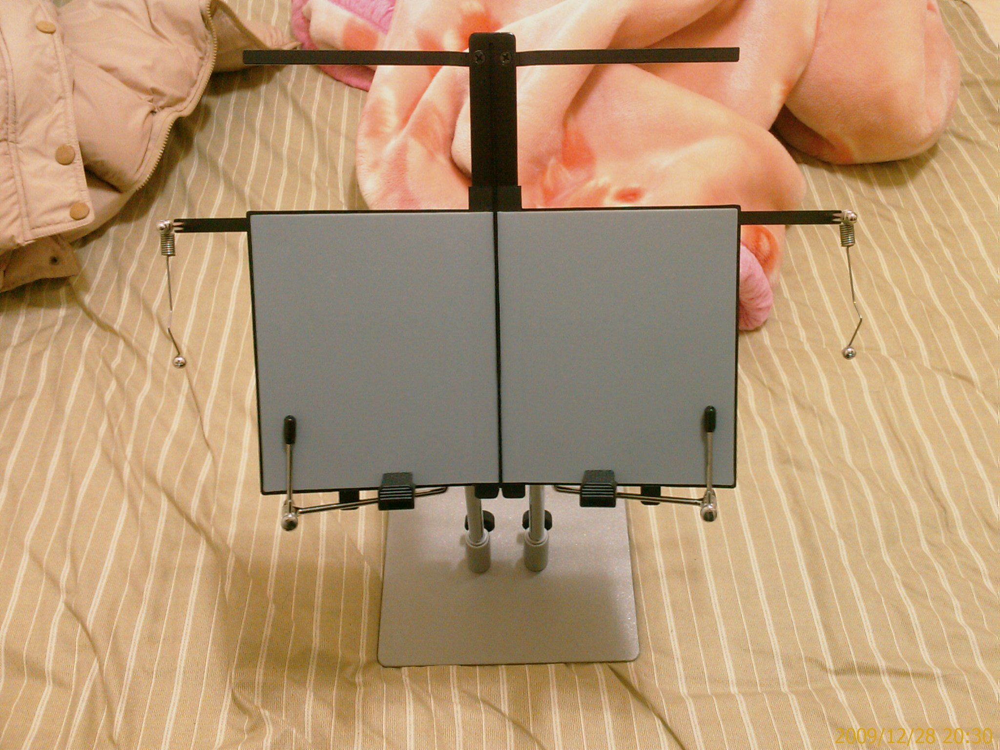
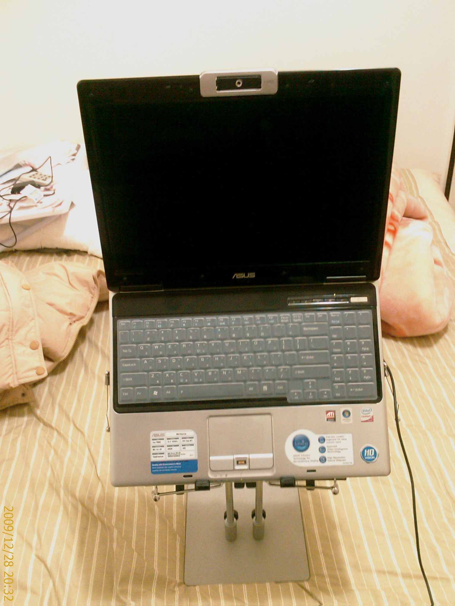
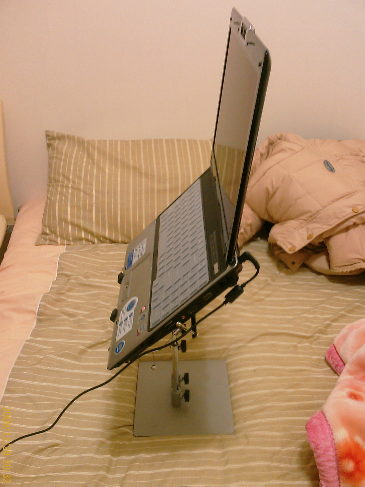

2009高雄資訊展
28/Dec 2009
星期日利用了一個下午去逛高雄的資訊展….
還記得去年是跟同事一起去逛的
今年就只有一個人了….
因為身邊沒順手的相機
所以 Show Girl 就只是動眼不動手….
不過這次感覺上 Show Girl 的平均素質好像有點….@_@
在體驗區有去試用了一些新的技術
- 光學投影式的觸碰螢幕
一般的觸碰式螢幕大多是用壓力式
不然就是電磁感應之類的
光學式的就是用電磁波(紅外線??)去定位物體靠近的點
所以投影用的板子就不用太高檔
而且也不用特殊的筆
令我訝異的是用刷子去畫還感應的出是刷子不是筆…!!
而且感覺還蠻即時的….
光學投影式的觸碰螢幕的投影方式還分兩種
一種是傳統的投影機 (NT$ 5x,xxx , 不含投影機)
一種是背投影式(這個我就不太清楚要怎麼投影了…@@) (NT$ 6xx,xxx)
- 微型投影機
投影機的 Size 大概像中型的手電筒
這個好像是雷聲大雨點小的產品
印象中很早以前就有類似的東西了
不過要是跟光學投影式的觸碰螢幕整合起來的話….(想像….!!!)
- 3D 立體筆電跟投影機
主要是 nVidia 的顯示技術
然後在戴上眼鏡….
之前有聽說有不用戴眼鏡的
不過逛了兩圈都沒看到
大概是還沒有 Alpha 版的產品??
看了幾分鐘的 3D 電影
我就開始頭暈了…@_@
我看這種要戴眼鏡又容易頭暈的東西
大概不會熱賣吧….
- 彩色電子紙
靜態的畫面看起來效果還不錯
不過更新畫面的速度真的是慘不忍睹
換一張畫面要 Scan 三、四次 (why??)
每次要一到兩秒左右
凍未條!!
都等到快睡著了….ZZzz….
Size 夠大的話
貼到牆上當壁紙輪播美女圖好像還堪用….XD
最後買了兩個不是3C的東西
- 可充鹼性電池的充電器 (NT$ 899)


其實這個之前就看到過了
只是這次終於忍不住買來玩看看
把之前用到快沒電的乾電池拿來充
從紅燈變綠燈了耶….!!
不知道還能用多久就是了…XD
不過乾電池也是超便宜的
充壞了也不心痛…ccc
- 床上書/電腦架 (NT$ 1600)



每次冬天到了就想躺在床上打電腦
但是又始終找不到好工具
記得在大學的時候還買過和式桌來放
不過就卡卡的….連翻身都會怕….@_@
這次這個也是一下子心血來潮
就不小心買了….XD
試用了一下
因為床是軟的
所以感覺不是很穩
就只好用雙腳夾住
不過這樣就不能全身躲進棉被了
只能蓋住上半身
不過這樣躺著看小說還真的蠻爽的….